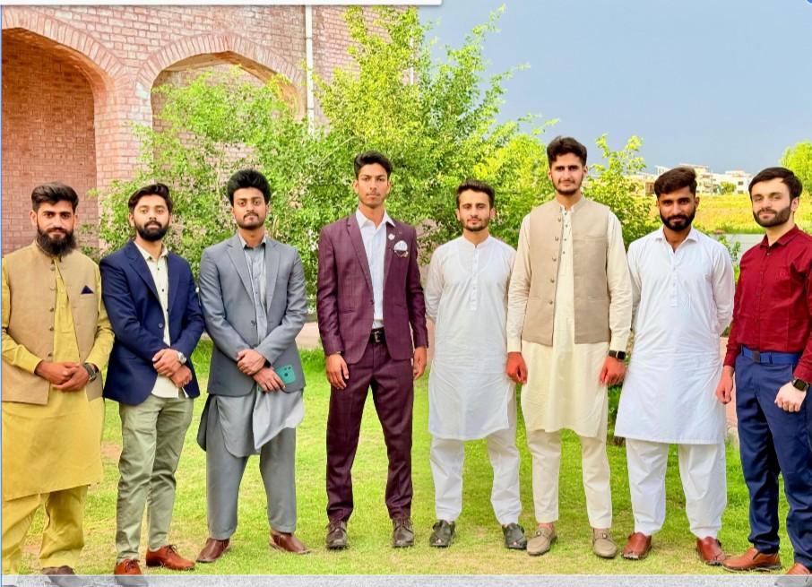
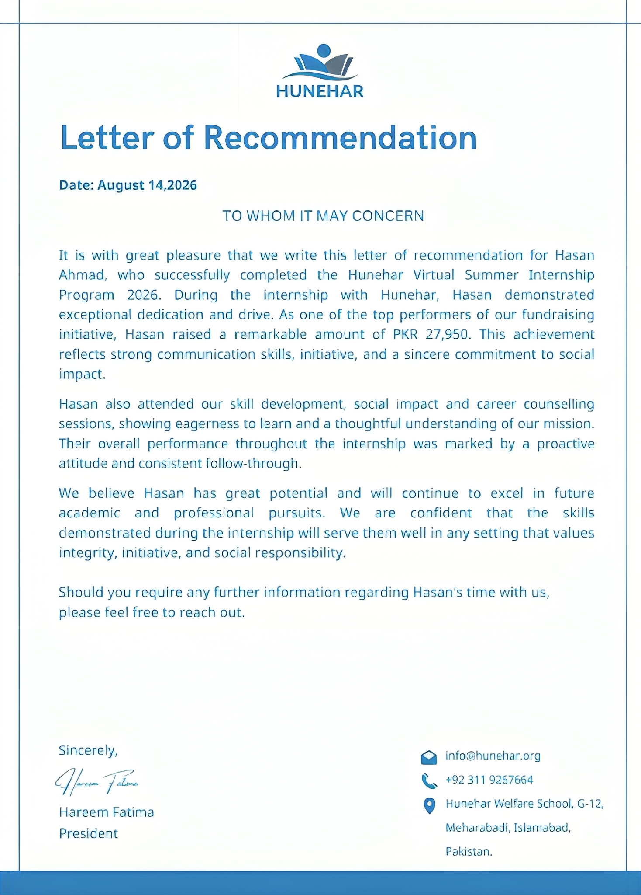
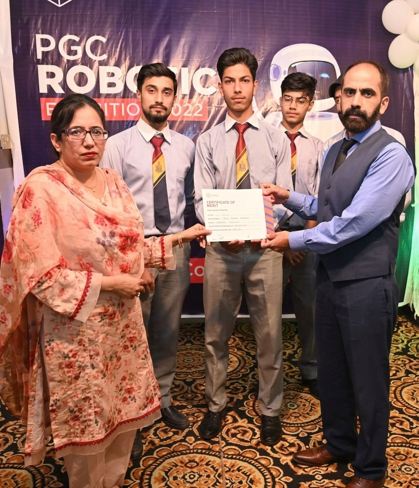

I'm a final-year Computer Science student at Federal Urdu University and a Research Associate at SINES, NUST, working on retrieval-augmented generation for scientific literature. A question keeps surfacing in my work: when should a language model trust what it retrieves, and when should it not?
I build RAG systems from scratch, stress-test them under noisy retrieval, and write up what the results actually show — not what I expected them to show. My systematic literature review on this question is currently under submission.
Areas I care about — interdisciplinary AI, trustworthy and evidence-grounded AI, human-AI interaction, and sustainable, efficient computing.
Areas of expertise
ML & DL Python LLMs & APIs Research & Literature Review RAG Vector Databases & Embeddings NLP HuggingFace Transformers Data Analysis & Reporting Prompt EngineeringAchievements
- Ranked 1st among 200+ students in my batch — on track for the university Gold Medal upon graduation
- Finalist, P@SHA ICT Awards 2026 — recognized for my final-year project among national finalists
- Awarded a laptop under the Prime Minister's Youth Laptop Scheme 2025, for academic merit nationwide
- Class Representative since 3rd semester
- Merit-based scholarship covering the 2-year program at Punjab Group of Colleges, Islamabad
- 3rd place, Robotics Exhibition 2022 (Punjab Group of Colleges) — Smart Home Monitoring System
Education & experience
-
Jul 2026 – Present
Research Associate
Computational Drug Design Lab, SINES, NUST — under Dr. Ishrat Jabeen. Building a RAG system over PubChem, ChEMBL, and DrugBank for drug-literature synthesis, using FAISS for retrieval and PostgreSQL for structured metadata.
-
Jan 2026 – Jun 2026
Research Intern
Image Analysis Lab, SINES — under Dr. Muhammad Shahzad. Explored transformer internals (attention layers, hidden representations) via BERT-based architectures, and built a YOLOv8 object detection model on a self-curated dataset.
-
Aug 2023 – Present
BS Computer Science
Federal Urdu University, Islamabad — CGPA 3.63/4.0, focus on AI and NLP
Workshops & coursework
- AI in Digital Pathology: Image Segmentation & Analysis — SINES, NUST (May 2026) — CellPose & QuPath
- IBM RAG and Agentic AI — 10 courses, Coursera / IBM
- Deep Learning Specialization — 5 courses, Coursera / DeepLearning.AI
- 50 Days of DSA: Python Data Structures & Algorithms — Udemy
- University coursework: AI, Data Science, DBMS, DSA, Advanced Programming, OOP, HCI, Data Mining, OOSE, OS, Web Programming
Leadership — Scholarship Society
Building structures that help other students access opportunities they'd otherwise miss.

I founded the Scholarship Society at FUUAST to close a gap I kept seeing around me — capable students missing out on opportunities simply because they didn't know these existed. I built proper groups and channels to reach students struggling from a lack of awareness, and set up a fast, accessible WhatsApp-based network to keep them connected to scholarships, competitions, and opportunities as they came up.
I also curated resources and guidance for international standardized tests, helping students prepare to compete on a global level.
Join the WhatsApp channelCommunity Service — Hunehar Foundation
Volunteer work supporting education for underprivileged students in Pakistan.
I served as a Fundraising & Outreach volunteer with the Hunehar Foundation, completing their Virtual Summer Internship Program 2026. As one of the program's top fundraising performers, I raised PKR 27,950 toward the foundation's mission of supporting education for underprivileged students.
Alongside outreach, I took part in skill-development, social-impact, and career-counselling sessions run by the foundation — building a closer understanding of the challenges facing under-resourced students, and how consistent, well-organized outreach can help address them.

Robotics Exhibition 2022
3rd place, PGC Robotics Exhibition 2022, Punjab Group of Colleges — Smart Home Monitoring System.

Our team secured 3rd place at the PGC Robotics Exhibition 2022, organized by Punjab Group of Colleges, for developing a Smart Home Monitoring System — an Arduino Uno-based project for real-time environmental monitoring, with threshold-based automation and a solar-tracking module built with LDR sensors and a servo motor.